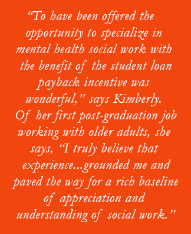

Kimberly Beckstead’s Loving Childhood Imbues Her with a Sense of Purpose
San Diego State Mental Health Training Program grad is inspired to provide a sense of safety, mastery, and hope to whomever she works with
July 10, 2017
“I have always been fascinated with the brain and mental health,” says Kimberly Beckstead, adding, “I have always loved probing and questioning how people think.”
How that curiosity could lead to a career as a mental health social worker initially seemed farfetched. After all, the profession of social worker was foreign to her. But then she found out about the Master of Social Work degree and the specific profession of mental health social worker. “I distinctly remember researching social work programs and reading the syllabi, shocked, thinking to myself, ‘I would actually get to take a class and learn about that?!’“
The die was cast. Excited at the prospect of combining her interests in the human brain, mental health, and social work, Kimberly enrolled at San Diego State University, where she was accepted into the Mental Health Training (since July 1, 2016, the Integrated Behavioral Health Stipend) Program (MHTP). She graduated with her M.S.W. in 2008.
Read more about the Integrated Behavioral Health Program
Currently Kimberly is Clinical Program Manager of the Marine Intercept Program at Marine Corps Air Station (MCAS) Miramar in San Diego. There, her responsibilities include providing: clinical supervision to one clinical counselor, clinical care coordination and in-depth suicide assessments for a caseload of up to 25 active duty Marines and attached Sailors post hospitalization, and base-wide suicide prevention briefs to 500-plus active duty service members. She is also a subject matter expert in suicidology, Adverse Childhood Experiences (ACE Study), Trauma-Informed Care, and Cluster B Personality Disorders.
Nurturing Childhood Inspires Her
“When I reflect on the reasons why I’m drawn to this work, I always come back to my safe, nurturing childhood,” Kimberly says. “I knew from a very young age how fortunate I was to be raised by two parents who prioritized my health and safety. Growing up in a loving family with unconditional support and a sense of a safety shaped who I would become and my sense of responsibility. I have always been keenly aware that not every child is born into a family that is as nurturing as mine. I am inspired to provide that sense of safety, even if only for a brief time, to the people I work with.”
Kimberly describes her approach: “I have always strived to provide a genuine sense of understanding and empathy and offer a sense of hope and safety—whether I was providing clinical case management to the pervasive mentally ill, individual therapy to older adults, crisis intervention for transitional age youth, DBT for those living with a pervasive personality disorders, substance abuse counseling with active duty military, or now, working with suicidal active duty Marines.
“It has been my intention to meet each individual client where they are, in the moment, offering coping skills and a sense of mastery. It is the goal to support them in getting to the point where they no longer require the safety net I have initiated and they feel safe enough to go on with their life empowered and a bit more hopeful on their own. I was lucky enough to grow up with a sense of safety; it has been my life’s work to offer this same sense to those I serve,” she says.
San Diego State’s MHTP Prepares Her Well
Kimberly recalls her time in the San Diego State MHTP as “a great experience. To have been offered the opportunity to specialize in mental health social work with the bonus of the student loan payback incentive was wonderful.”
The program’s payback stipulation that required her to seek employment with the County of San Diego or at a County-funded program is one for which she is particularly grateful. In fact, she credits her first job post graduation, working with adults with chronic and pervasive mental illness as a case manager at Strength-Based Case Management, for setting her future course.
Read stories about other CalSWEC alumni
“It was there that I learned what true social work entails. I was in the trenches, learning about MediCal, SSI, and seeing firsthand what chronic and pervasive mental illness looks like,” she remembers. “I was pushed outside of my comfort zone, visited clients at independent living facilities and board and cares. I transported clients to appointments and was invited into their homes.”
Looking back, she says, “I truly believe that this experience, fresh out of graduate school, grounded me and paved the way for a rich baseline of appreciation and understanding of social work. I can’t say that I would have known to pursue this job had I not been obligated to explore my options at County funded programs by the MHTP. It provided a much appreciated sense of direction.”
Transitioning from Older Adults to Active Duty Military
Following Mental Health Systems, Kimberly began working with active duty Marines and attached Sailors at MCAS Miramar—MCCS Substance Abuse Counseling Center as the Clinical Supervisor. “Transitioning between populations offering mental health social work is really my favorite part about being an LCSW. My LCSW provides me the opportunity to work with a wide range of populations, and I love it,” she says.
“What I quickly learned in my transition from working with older adults to active duty military is that we are all just humans. Regardless of age, experience, ethnicity, socioeconomic status, gender, rank, or sexual orientation, at the core, we are all humans with the same needs…. Everyone is seeking a sense of safety, a sense of belonging, and a yearning to be understood with genuine compassion. This applies to each population.”
Observes Kimberly, “I realized early on that the glue that ties each of these diverse populations together is unresolved trauma. It is rarely combat trauma that brings my clients to my office. It is unresolved complex childhood trauma that they enter the military with.”
Thriving in Her Current Environment
Today, she is in her element. “I thrive working in an acute, high-risk environment where crisis intervention skills are paramount. The Marines and Sailors that I get to work with everyday are actively suicidal and/or may have attempted to end their life within the last 90 days. I use my trauma-informed lens—clinical philosophy—on a daily basis, empowering my clients to decide how I can help, where their source of emotional pain is, and linking them to the resources necessary to resolve their imminent suicidal thoughts,” she says.
Additionally, as Program Manager, Kimberly says, “I am also able to effect change on a macro level with program standard operating procedures, tracking trends, and providing training/education for active duty senior leadership.”
FAQs about the Integrated Behavioral Health Program
Still, she notes, “I have always said that seeing clients, providing one-on-one direct care coordination and treatment gives me energy. I am not interested in ever moving away from direct client interaction. I love this position because I am able to maintain direct client interaction while running this specialized program. I prefer to do both.”
“At this point in my career, I can honestly say that I have found my niche. I have realized the point of intersection between trauma, mental illness, and substance abuse is suicidology,” says Kimberly.
Given this insight, she is pursuing a specialization in suicidology, both post-vention and prevention. “There are many layers to suicidology, and each requires a deep dive into a person’s adverse childhood experiences, risk factors, protective factors, threshold for stress, and overall perspective on life itself,” she notes. “I love that I am able to explore this on a daily basis with the Marines I work with.”